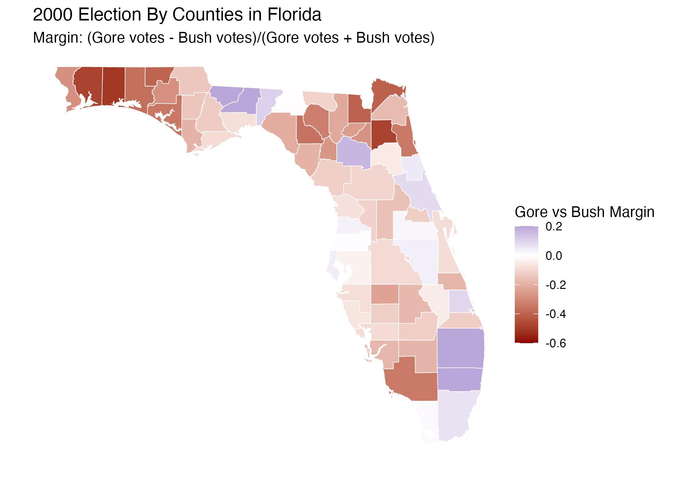
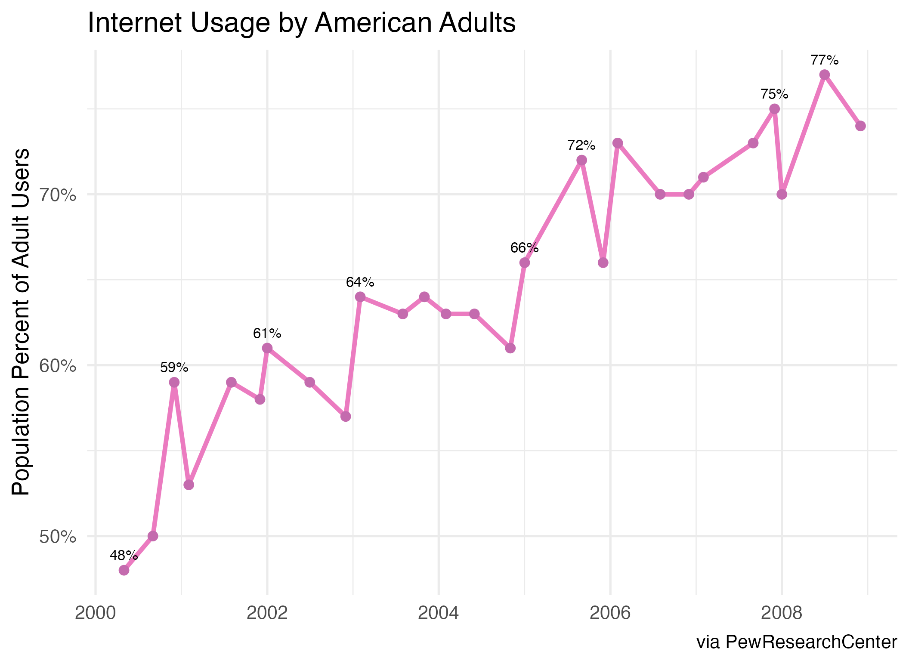
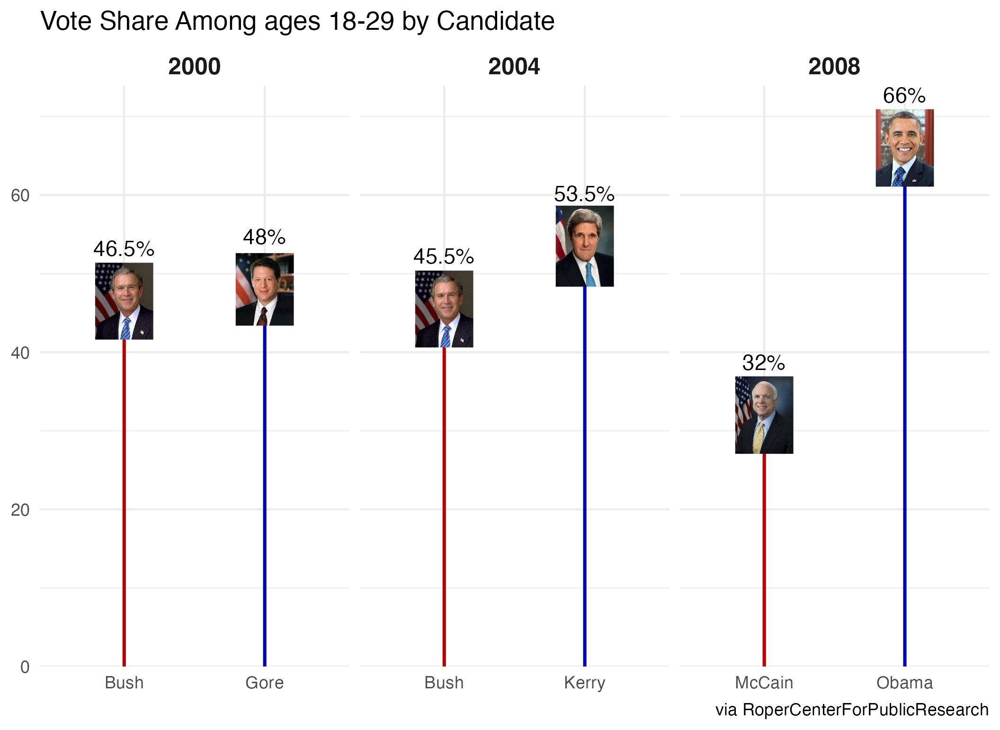
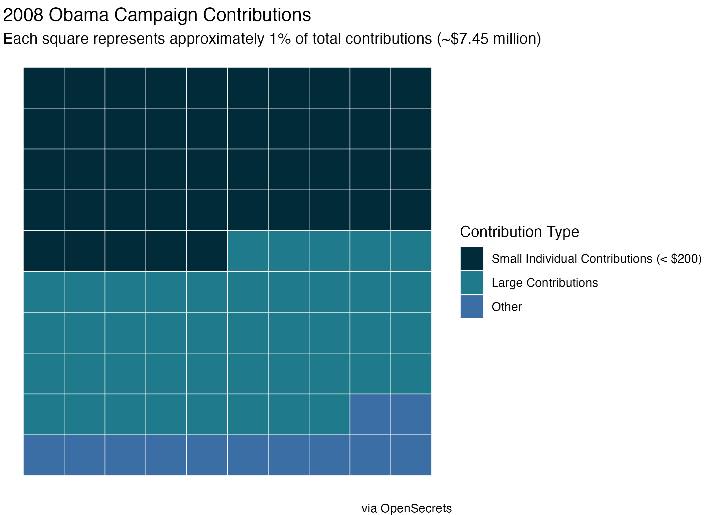
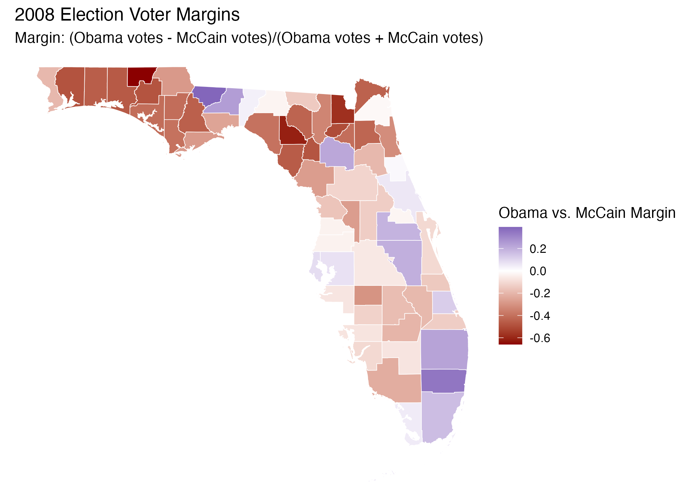

The 2000 presidential election ended in one of the closest contests in recent history. Eight years later, Barack Obama defeated John McCain decisively. This project uses a series of visualizations to explore changes in election culture and campaign practices across that period.
Revisiting 2000
The project begins with county-level margins in Florida, the decisive state in the 2000 election, highlighting just how closely contested the race was across parts of the state.

The internet becomes campaign infrastructure
Internet use among American adults rose substantially during the decade, creating new opportunities for candidates to communicate, mobilize supporters, advertise and collect digital donations.

Youth vote share
Young voters favored Democratic nominees across 2000, 2004 and 2008, with Obama winning 66% of the 18–29 vote in 2008 compared with McCain's 32%.

Small-donor dominance
Obama's 2008 campaign also reflected a shift in campaign finance: 49% of contributions came from small donors giving less than $200, compared with 17% for McCain.

From 2000 to 2008
The final Florida map provides a visual bookend: the state that decided the 2000 election moved into Obama's column in 2008 amid broader changes in campaigning, participation and fundraising.
